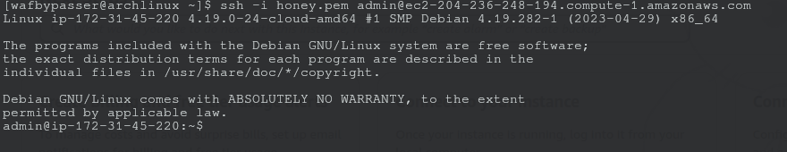
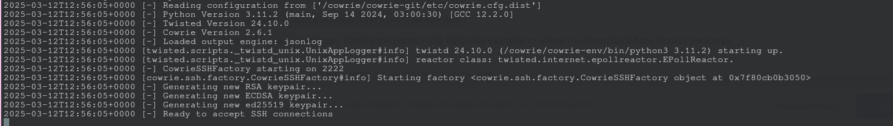

Table of contents
- What is a honeypot?
- Types of honeypots
- Why do we need honeypots in our infrastructures?
- Time to deploy that beast!
What is a honeypot?
A honeypot in computer security terms is a trap to deceive malicious threat actors into thinking that this is a real system, and provoke them to attack that decoy we've set up. It mimics a target for hackers, and uses their intrusion attempts to gain information about cybercriminals and the way they are operating or to distract them from other targets.
The honeypot looks like a real computer system and often is tailored for the company, for example a honeypot could mimic a company's banking system and hacker can be tracked. Their behavior assessed for clues on how to make the real network more secure.
Types of honeypots
There are several types of honeypots that can help identify and address different cybersecurity threats. The specific honeypot used typically depends on the type of threat you're trying to mitigate.
- Email traps (spam traps) - These involve placing a fake email address in a location that only automated tools designed to harvest emails can detect. Since this email is used solely for the purpose of catching spam, any message sent to it is guaranteed to be unsolicited. This allows organizations to block incoming messages with similar characteristics and even blacklist the source IPs of the spammers.
- Fake database - is set up to monitor and detect attacks targeting software vulnerabilities. It can reveal attempts to exploit weak system architectures, such as those involving SQL injection, misuse of SQL services, or privilege escalation.
- Malware honeypots - emulates software applications and APIs to attract malicious software. By studying the malware that interacts with these systems, cybersecurity professionals can develop better anti-malware solutions or patch the vulnerabilities being exploited.
- Spider honeypots - are designed to deceive web crawlers, also known as spiders. These honeypots generate web pages and links that are only accessible by automated bots. Identifying these crawlers helps in blocking malicious bots and identifying intrusive ad-network crawlers.
Honeypots can also be categorized based on their level of interaction. Low-interaction honeypots are relatively simple and require fewer resources. They gather basic data on the type and location of threats, often using simple simulations of network services or protocols. However, these honeypots don’t engage attackers for long periods, which limits the depth of information collected, especially in the case of sophisticated threats.
In contrast, high-interaction honeypots are designed to keep attackers engaged for longer durations. They provide more complex systems, such as databases and networks, which can offer valuable insights into the attackers' intentions, targets, and methods. These honeypots allow researchers to track attacker movements within the system and understand the tools and exploits they use. However, they are more resource-intensive to set up and manage. Additionally, without proper security measures like a "honeywall," there is a risk that a skilled attacker could leverage the honeypot to launch attacks against other systems or use it for malicious purposes like sending spam.
Why do we need honeypots in our infrastructures?
mplementing honeypots as part of a cybersecurity strategy offers numerous benefits for organizations aiming to enhance their security posture. By strategically deploying these deceptive systems, businesses can proactively identify and mitigate potential threats. Below are some key advantages of using honeypots in cybersecurity:
- Early threat detection: Honeypots act as an early warning system, enabling detection of potential attacks before they reach critical systems.
- Understanding attackers' tactics: By interacting with attackers, honeypots provide valuable information about their techniques, tools and procedures, allowing for better adaptation of defense mechanisms.
- Minimizing false alarms: Since honeypots do not have a productive role, any interaction with them is suspect, minimizing false alarms and allowing you to focus on real threats.
- Protecting sensitive data: Honeypots draw attackers' attention away from critical systems, protecting the organization's sensitive data and resources.
Time to deploy that beast!
I used AWS instance to deploy a Debian machine.
Then i connected with private key via SSH to the machine.
After that i used "https://github.com/cowrie/cowrie" ssh honeypot as it was pretty easy to deploy and demanded fewer resources then for example tpot, I just needed to install docker on that Debian machine, then "docker run -p 2222:2222 cowrie/cowrie:latest" and boom my SSH honeypot is up and running.
Then i looked that i cannot get any connection so i changed the deployment a little, I cloned the repo $ git clone http://github.com/cowrie/cowrie Cloning into 'cowrie'... remote: Counting objects: 2965, done. remote: Compressing objects: 100% (1025/1025), done. remote: Total 2965 (delta 1908), reused 2962 (delta 1905), pack-reused 0 Receiving objects: 100% (2965/2965), 3.41 MiB | 2.57 MiB/s, done. Resolving deltas: 100% (1908/1908), done. Checking connectivity... done. $ cd cowrie created virtual environment: $ python -m venv cowrie-env and downloaded packages needed source cowrie-env/bin/activate $ python -m pip install --upgrade pip $ python -m pip install --upgrade -r requirements.txt started up the cowrie $ bin/cowrie start Activating virtualenv "cowrie-env" and also i made cowrie accesible on port 22 with this command sudo iptables -t nat -A PREROUTING -p tcp --dport 22 -j REDIRECT --to-port 2222